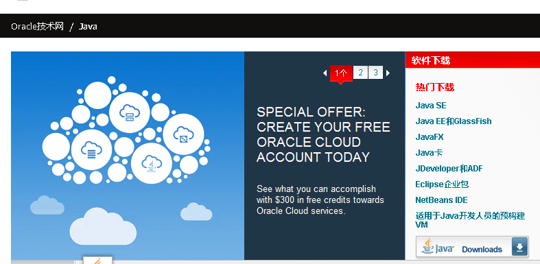
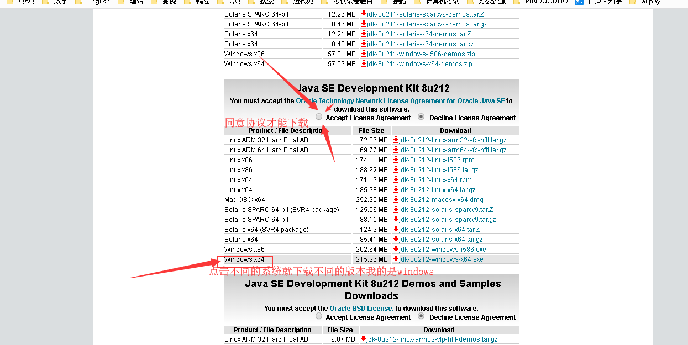
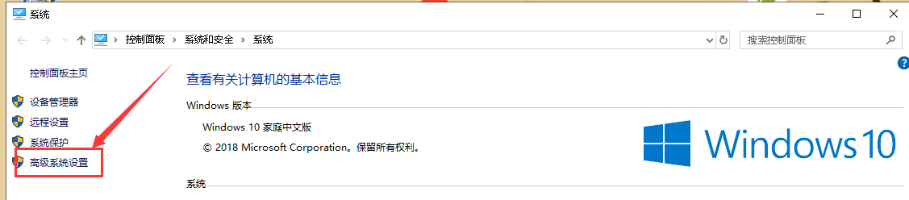
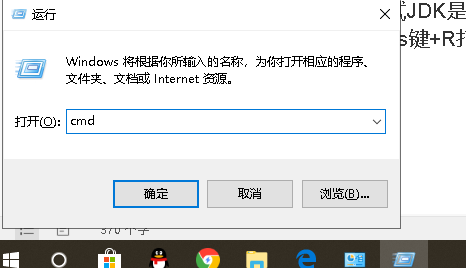
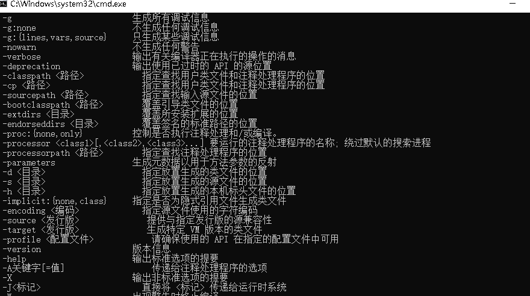

总体分为两个步骤
首先我们直接下载java开发工具包JDK，转到Oracle官网 下载链接：
https://www.oracle.com/technetwork/java/javase/downloads/index.html
2.选择自己所需要使用的版本，点击download，下面是各个版本的信息

通常入门使用的此版本，适合小型应用开发和桌面应用程序使用
它允许开发和部署在桌面、服务器、嵌入式环境和实时环境中使用的 Java 应用程序，
程序员在公司上班使用的版本，功能强大，企业版本帮助开发和部署可移植、健壮、可伸缩且安全的服务器端 Java 应用程序。
Java Platfrom Micro Edition （简称微型版 JAVA ME ）
用于手机应用程序开发，为移动设备和嵌入式设备(比如手机、PDA、电视机顶盒和打印机)上运行的应用程序提供一个健壮且灵活的环境
说的简单点
java SE 是做电脑上运行的软件。
Java EE 是用来做网站的-(我们常见的JSP技术)
Java ME 是做手机软件的。
3. 单击Download 后 出现的是如下图，之后 必须先勾选同意协议 ，才能下载，然后选择自己的操作系统下载，Mac 或者windows ，Linux

4. 安装JDK，安装过程中可以自定义安装目录等信息，例如我们选择安装目录为 C:\Program Files (x86)\Java\jdk1.8.0_91

5. 在我的电脑 右击-----属性 ——高级系统设置——环境变量—系统变量—在 "系统变量" 中新建 3 项属性，若已存在则点击"编辑"，不存在则点击"新建"。
变量设置参数如下：
l 变量名：JAVA_HOME
l 变量值：C:\Program Files (x86)\Java\jdk1.8.0_91
l // 要根据自己的实际文件安装路径配置
l 变量名：CLASSPATH
l 变量值： .;%JAVA_HOME%\lib\dt.jar;%JAVA_HOME%\lib\tools.jar;
l //记得前面有个"."
l 变量名：Path
l 变量值：%JAVA_HOME%\bin;%JAVA_HOME%\jre\bin;
6，测试JDK是否安装成功
Windows键+R打开 运行 ——输入cmd——打开命令提示符---键入命令: javac
如出现下图说明环境变量配置成功。

1. Eclipse（推荐）:一个免费开源的java IDE，
下载地址： https://www.eclipse.org/downloads/
选择 Eclipse IDE for Java Developers：
下载后 需要安装目录于javaJDK 安装目录不在同一文件，然后即可运行
2.如果没有什么Java基础的话，就用EditPlus吧，这样可以练习好多初学者应该知道的东西